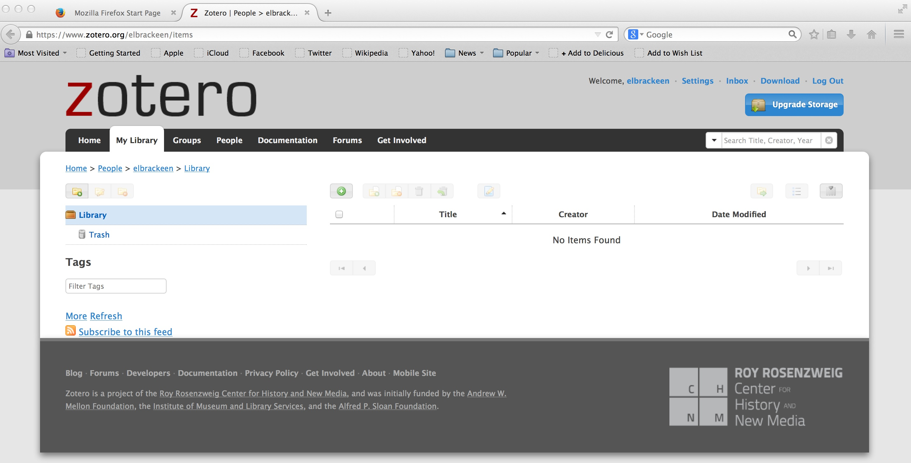
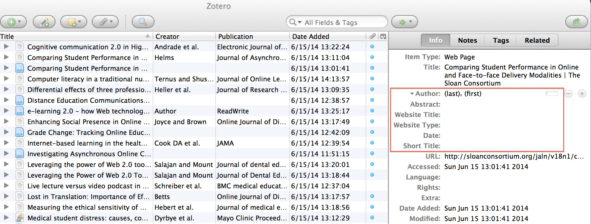
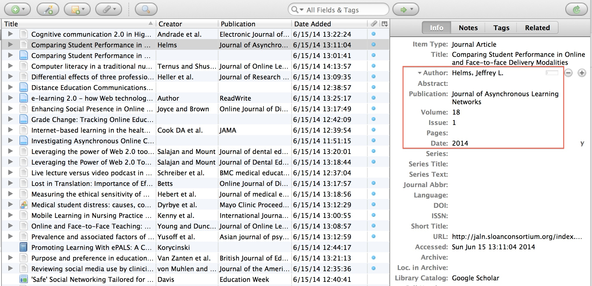

Freshly registered Zotero on the web.
To use the tool you will need to register and download the software. Zotero is available as a Firefox extension or as standalone software for Windows, Mac and Linux. If you want to use Zotero in a browser other than Firefox you can use a connector or bookmarklet in conjunction with the standalone software. In addition, Zotero has a plugin for Micrososft Office and LibreOffice for the cite while you write functionality (pictured below).

You need to know how to register for an online service and install a browser extension. However, to use Zotero effectively, it is important to for you to be familiar with all of the elements in all of the types of bibliographic citations you are using. Like every database, the quality of what you are able to get out of the database is completely dependent on what you put in the database. If Zotero does not “scrape” the data correctly from the website you have used as a reference, when it comes time to review and edit your paper, you will be tracking down each of those incorrect bibliographic citations. It is best to check the citations as you download, especially from new sites. For example, when I add (Helms, 2014) to Zotero from www.sloanconsortium.org I do not get volume, issue, date, author, journal title etc. but when I add the same resource from Google Scholar, all of the bibliographic elements I need are included.
Compare these two screen shots of the bibliographic metadata collected on the Helms article from the Sloan Consortium website:

and the bibliographic metadata collected from Google Scholar

Play this video to see saving to Zotero in action
Zotero Saving from Elizabeth Brackeen on Vimeo.
Play this video to see one of the ways to get your formatted citations out of Zotero and into your document.
Screen Recording from Elizabeth Brackeen on Vimeo.
As a working example of how we might use Zotero in an academic setting, I created a library of all the references that were included in our Module 1 Mini-Research Proposals.
As a user of EndNote and RefWorks, I would recommend Zotero, especially to Firefox users. But, I would recommend Mendeley even more. I was an early adopter of Zotero because I was a Firefox user. Once Chrome became stable I abandoned Firefox and therefore Zotero, this was prior to the Chrome and IE extensions. Within the last six months I have started using Mendeley and prefer it over Zotero. Mendeley requires fewer clicks over all, you can use it in an online-only environment from any browser and best of all, you can do a literature search from within the software that allows extraordinarily easy importing of bibliographic records. Zotero definitely has the better scraping technology but I am sure in time Mendeley will catch up. We will all benefit from these two competing against each other. Improvements in web-based software and cloud storage has evened the playing field for the upstart and for now both EndNote and RefWorks are still behind the Zotero and Mendely advancements in Citation Manangement software. Also, you can easily import and export records between all of these tools. If you get stuck, just ask your librarian.